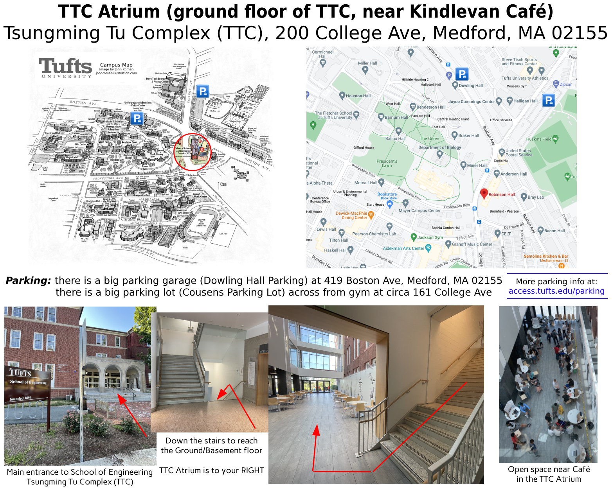

NE-FIRST Alum Robotics Meetup
Tufts University, TTC Atrium, Medford MA 02155
Monday, February 17th, 2025 | 10 AM - 5 PM
Information Flier Register NowTufts University, TTC Atrium, Medford MA 02155
Monday, February 17th, 2025 | 10 AM - 5 PM
Information Flier Register NowCalling all FIRST Robotics alumni! Join us for a day of hands-on innovation and robot hacking! Dive into the exciting new XRP robotics platform, team up with fellow alumni from diverse disciplines, and collaborate to tackle an exhilarating robotics challenge. Whether you’re looking to prototype, learn, or just have a blast, this event is the perfect chance to connect with the vibrant Boston FIRST alumni community, showcase your creativity, and explore cutting-edge robotics. Don’t miss this chance to learn, network, and make robots—and memories!
Tsungming Tu Complex (TTC) Atrium, 200 College Ave, Medford MA 02155

Tufts parking information at: https://access.tufts.edu/parking
Link to Event Github Repo (request access from event organizers)
Use Nearest-Neighbor Supervised Classification with the XRP robot's distance sensor to classify objects as "high" or "low".
View ProjectUse Linear Regression with the XRP robot's distance sensor (and Sparkfun's Qwiic Twist) to do linear-regression based driving (stop at the stop sign).
View ProjectA project that enables the XRP robot to follow a predefined path using line sensors.
View ProjectConnect your XRP robot up to a MQTT server and have it chat with other robots. Create a swarm of XRP robots!
View ProjectConnect a HuskeyLens AI-based camera to your XRP robot to enable advanced computer vision applications.
View ProjectSpecial thanks to the following for their support of this event